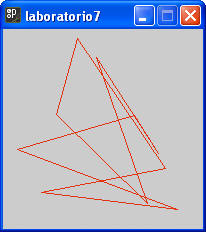
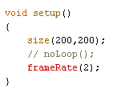
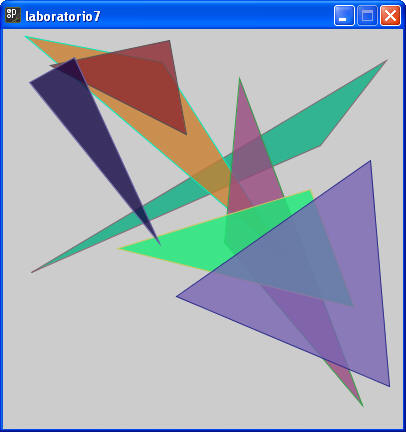
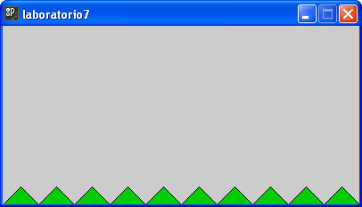
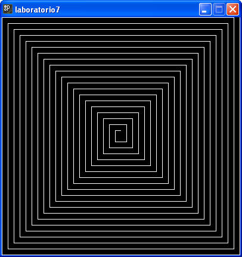

Recuerda que los colores y tamaños deben ser los más parecidos a los dibujos solicitados.
1. Crea un programa que realice el siguiente dibujo. El programa muestra una figura geométrica irregular cerrada con 10 vértices, cuya posición es aleatoria (pero sin salirse de la ventana). Además el color de la línea es también aleatorio.

2. Copia el ejercicio anterior y agrega las siguientes líneas de código dentro del método setup. Prueba la animación cambiando el valor de frameRate() e identifica que significado tienen estos cambios. Agrega un comentario al programa donde documentes tus conclusiones del ejercicio.

3. Crea un programa que realice el siguiente dibujo. El programa muestra 7 triángulos creados mediante el uso de vértices, recuerda que el método beginShape( ) puede tener como entrada la opción de TRIANGLES, lo que facilita la solución de este ejercicio, por lo que no es necesario crear una figura por cada triángulo. Como se habrán dado cuenta, los vértices, color de línea, color de relleno son aleatorios. demás de que se maneja trasparencia.

4. Crea un programa que realice el siguiente dibujo. El programa agrega "Pasto" a nuestro dibujo, el tamaño y color del pasto queda a tu criterio, lo importante es que se rellene el marco inferior de la ventana. Una restricción del ejercicios es que deben usar vértices para su codificación.

Sección de ejercicios opcionales
5. Crea un programa que realice el siguiente dibujo. Para no complicar el problema, puedes suponer que la ventana siempre es cuadrada.
